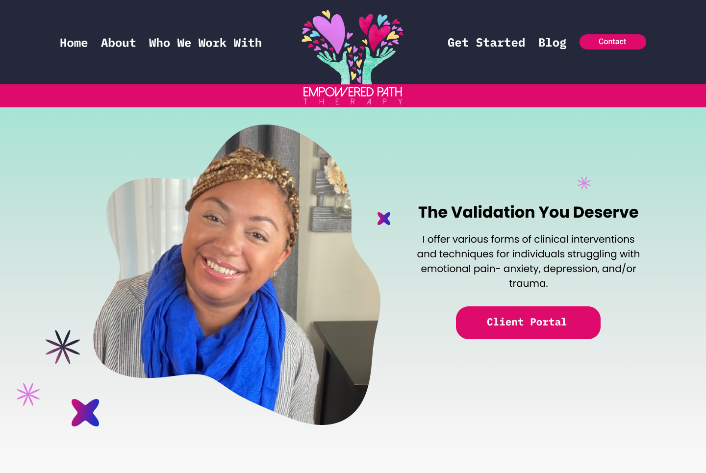

01 / Client work
Empowered Path Therapy
Full-Stack Software Engineer · 2024–2016

- Understand
A growing telehealth practice
Translate the practice’s services and client journey into a clear, welcoming digital experience.
- Build
Public experience + application foundation
Combine responsive interface work with a Django-based foundation that can support evolving workflows.
- Show
Evidence a buyer can inspect
The live website and Figma work make the delivered interface and product thinking visible.
Open evidence notes +
Available artifacts
- Live sitePublished client experienceVisit site ↗
- Interface designFigma design fileOpen Figma ↗